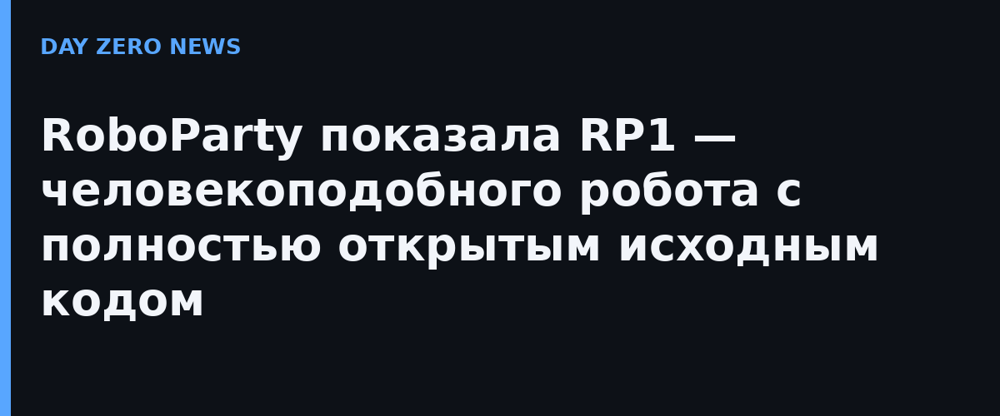

28 сентября на конференции IROS 2026 RoboParty впервые показала публике робота RP1. Главная фишка на стенде — интерактив «Kick Me»: посетители могли толкать и пинать робота, а RP1 каждый раз восстанавливал равновесие, а после падений поднимался сам. Компания подчёркивает: это не проигрывание заранее записанных движений, а живая демонстрация динамической устойчивости.
RoboParty называет RP1 первым в мире высокопроизводительным гуманоидом с full-stack открытым исходным кодом. Компания обещает постепенно раскрыть не только механику, но и модули актуаторов Romomo, систему управления в реальном времени, среды симуляции, SDK, инструменты обучения и платформу разработки PartyOS. Ставка делается на то, что исследователи смогут не просто купить робота «как есть», а модифицировать и переобучать его под свои задачи. Пиковый момент в суставах — до 160 Н·м, корпус разбирается на 185 деталей.
В январе 2026 года RoboParty полностью открыла свой первый проект RPO (ROBOTO ORIGIN) — он набрал более 2500 звёзд на GitHub и породил несколько сборок силами сообщества. Движения RP1 обучает фреймворк UFO (A General Unsupervised Reinforcement Learning Framework for Humanoid Control): низкоуровневые политики учатся без жёстко заданных траекторий, включая переходы между навыками, восстановление после толчков и падений.
Детали открытой дорожной карты RP1 компания обещает опубликовать в октябре 2026 года, а в четвёртом квартале 2026 года — расширенные релизы софта и железа и программу массового производства. Для исследователей это значит: если обещания выполнятся, получится редкий для отрасли случай — производительный гуманоид, который можно воспроизвести и развивать у себя, а не только наблюдать за его шоу на выставках.